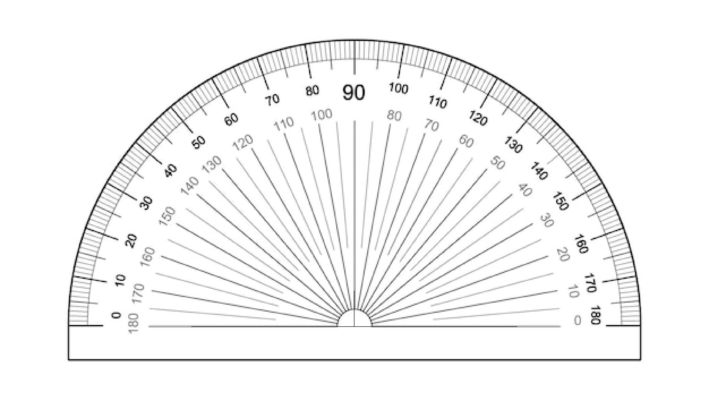

Basic 7
Indicators: B7.3.1.1.1 - B7.3.1.2.7
B7.3.1.1.1 Measure and classify angles according to their measured sizes - right, acute, obtuse and reflex
Here, we will learn about the different types of angles such as acute angles, obtuse angles, reflex angles and right angles.
We will also learn how to use the protractor to measure and draw angles such as 30°, 45°, 60°, 75°, 90°,120°, 150°, 270°, 300°, etc.
B7.3.1.1.2 Apply the fact that (i) complementary angles are two angles that have a sum of 90°, and (ii) supplementary angles are two angles that have a sum of 180° to solve problems.
Kindly check back later for the lesson on this topic, as our website is still in the process of being built. Thank you.
B7.3.1.1.3 Use adjacent, supplementary and vertically opposite angles to solve problems
Kindly check back later for the lesson on this topic, as our website is still in the process of being built. Thank you.
B7.3.1.2.1 Construct a line segment perpendicular to another line segment
Kindly check back later for the lesson on this topic, as our website is still in the process of being built. Thank you.
B7.3.1.2.2: Construct the perpendicular bisector of a line segment
Kindly check back later for the lesson on this topic, as our website is still in the process of being built. Thank you.
B7.3.1.2.3: Copy and bisect angles
Kindly check back later for the lesson on this topic, as our website is still in the process of being built. Thank you.
B7.3.1.2.4: Construct angles of 90˚ and 45˚
Kindly check back later for the lesson on this topic, as our website is still in the process of being built. Thank you.
B7.3.1.2.5: Construct angles of 60˚ and 30˚
Kindly check back later for the lesson on this topic, as our website is still in the process of being built. Thank you.
B7.3.1.2.6: Construct angles whose measures are 15˚ and 75˚
Kindly check back later for the lesson on this topic, as our website is still in the process of being built. Thank you.
B7.3.1.2.7: Describe examples of perpendicular line segments, perpendicular bisectors and angle bisectors in the environment.
Kindly check back later for the lesson on this topic, as our website is still in the process of being built. Thank you.
Basic 8
Indicators: B8.3.1.1.1 - B8.3.1.2.3
B8.3.1.1.1 Draw and determine the values of alternate and corresponding angles
Kindly check back later for the lesson on this topic, as our website is still in the process of being built. Thank you.
B8.3.1.1.2 Determine the values of angles in a triangle using knowledge of the sum of interior angles in a triangle and other properties.
Kindly check back later for the lesson on this topic, as our website is still in the process of being built. Thank you.
B8.3.1.2.1 Construct and bisect angles of 120˚, 105˚, 135˚ and 150˚
Kindly check back later for the lesson on this topic, as our website is still in the process of being built. Thank you.
B8.3.1.2.2: Construct scalene triangles, isosceles triangles, equilateral triangles, obtuse-angled triangle, and acute-angled triangles in different orientations under given conditions.
Kindly check back later for the lesson on this topic, as our website is still in the process of being built. Thank you.
B8.3.1.2.3: Construct loci under given conditions including: (i) the locus of sets of points from a fixed point; (ii) the locus of points equidistant from two fixed points; (iii)the locus of points equidistant from two intersecting straight lines, and (iv)the locus of points equidistant from two parallel lines.
Kindly check back later for the lesson on this topic, as our website is still in the process of being built. Thank you.
Basic 9
Indicators: B9.3.1.1.1 - B9.3.1.2.2
B9.3.1.1.1 Derive the formula for calculating the sum of angles in any polygon and use this to calculate the value of missing angles in polygons
Kindly check back later for the lesson on this topic, as our website is still in the process of being built. Thank you.
B9.3.1.1.2 Identify similar and congruent triangles and use the knowledge to solve related problems
Kindly check back later for the lesson on this topic, as our website is still in the process of being built. Thank you.
B9.3.1.2.1 Draw inscribed and circumscribed circles for triangles under given conditions
Kindly check back later for the lesson on this topic, as our website is still in the process of being built. Thank you.
B9.3.1.2.2 Construct parallelograms (i.e. square, rectangle, rhombus) under given conditions
Kindly check back later for the lesson on this topic, as our website is still in the process of being built. Thank you.